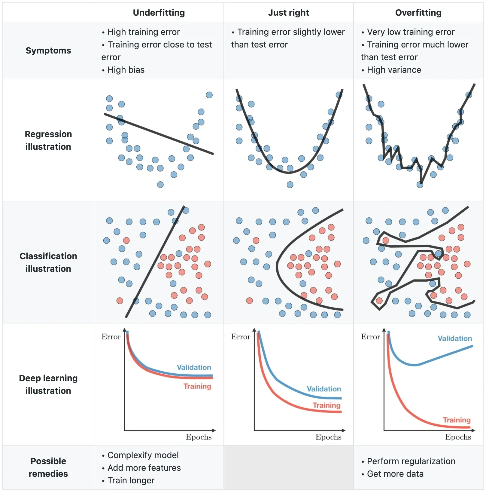

什么是拟合与过拟合？
- by @karminski-牙医

(图片来自 arockialiborious.com)
拟合（Fitting）是机器学习中让数学模型贴合观测数据的过程。就像根据身材定制衣服，好的拟合需要平衡贴合度（Goodness of Fit）与泛化能力（Generalization）：
- 贴合度：模型对训练数据的解释能力（如衣服的合身程度）
- 泛化能力：模型对新数据的预测能力（如衣服对不同体型的适应性）
- 平衡艺术：完美贴合训练数据 ≈ 100%定制服装，但可能无法适应新体型
拟合的本质
- 数学定义：寻找函数 $f(x)$ 使得 $f(x_i) \approx y_i$（$i=1,...,n$）
- 核心矛盾：模型容量与数据复杂度
- 关键指标：训练误差（Training Error） vs 测试误差（Test Error） vs 验证误差（Validation Error）
欠拟合：当模型不够聪明
欠拟合（Underfitting）是模型无法捕捉数据基本模式的现象：
- 典型特征：训练误差和测试误差都较高
- 危险信号：模型忽略明显的数据趋势
- 经典案例：用线性模型拟合正弦波数据
过拟合：当聪明反被聪明误
过拟合（Overfitting）是模型完美记忆训练数据却失去泛化能力的现象：
- 典型特征：训练误差趋近于0，测试误差突然上升
- 危险信号：模型开始拟合噪声和异常值
- 经典案例：用10次多项式拟合10个数据点
拟合程度对比表
| 特征 | 欠拟合 | 适度拟合 | 过拟合 |
|---|---|---|---|
| 模型复杂度 | 过低 | 匹配数据复杂度 | 过高 |
| 训练误差 | 高 | 低 | 趋近于0 |
| 测试误差 | 高 | 低 | 突然升高 |
| 数据利用效率 | 浪费信息 | 有效提取模式 | 记忆噪声 |
| 典型解决方法 | 增加模型复杂度 | —— | 正则化/早停/数据增强 |
数学视角
1. 优化目标
给定数据集 $(X,y)$，拟合过程可表示为： $$\min_{\theta} \frac{1}{n}\sum_{i=1}^n L(f_\theta(x_i), y_i) + \lambda R(\theta)$$ 其中：
- $L$ 为损失函数（如MSE/交叉熵）
- $R(\theta)$ 为正则化项（L1/L2正则）
- $\lambda$ 为正则化系数
2. 偏差-方差权衡
泛化误差可分解为： $$\mathbb{E}[(y-\hat{f})^2] = \underbrace{(\mathbb{E}[\hat{f}] - f)^2}{\text{Bias}^2} + \underbrace{\mathbb{E}[(\hat{f}-\mathbb{E}[\hat{f}])^2]}{\text{Variance}} + \sigma^2$$
- 高偏差：模型过于简单（欠拟合）
- 高方差：模型过于复杂（过拟合）
- 黄金平衡：通过调整模型复杂度找到最小总误差点
过拟合发生时，模型满足： $$\mathbb{E}[L_{train}] \ll \mathbb{E}[L_{test}]$$ 即训练误差显著小于测试误差。